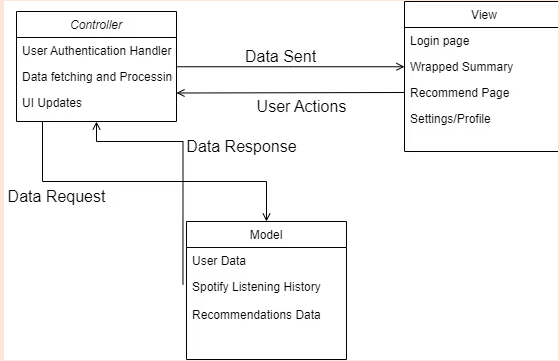

Overview
- Login with Spotify (OAuth) to securely access listening data.
- View a summary with top artists and top tracks.
- Play short previews for selected songs.
- Choose a timespan: short, medium, or long term.
- See recommended artists based on your history.
- Manage profile: update password, log out, or delete account.
Video Demo
Tech Stack
- Android (Kotlin/Java)
- Spotify Web API (REST/JSON)
- MVVM architecture
Links
Add repo / demo links when ready.
Architecture — MVC

- Model: user profile data, Spotify listening history, recommendations data.
- View: login, wrapped summary, recommended page, settings/profile.
- Controller: user authentication handler, data fetching & processing, UI updates.
- User actions: flow from View → Controller (login, pick timespan, tap play).
- Data request/response: Controller ↔ Model for fetching and returning data.
- Data sent: Controller updates the View with new data and commands.
Process & Team Workflow (Agile)
- Used Agile (Scrum-style) with a 2.5-week sprint cadence.
- Sprint planning: set goals & story-point estimates; committed within capacity.
- Daily stand-ups (Discord): noon updates on yesterday’s work & blockers.
- Weekly TA sync: Rohan on Tuesdays 4:30 pm via Zoom for Q&A and status.
- Tracking: Trello board (backlog → in progress → review → done).
- Pre-demo: 2.5 weeks after spring break; 20+ story points, TA feedback, assessment exemption.
- Retrospectives: after each sprint to capture “went well / improve next”.
- Ad-hoc in-person sessions for tricky issues and planning.